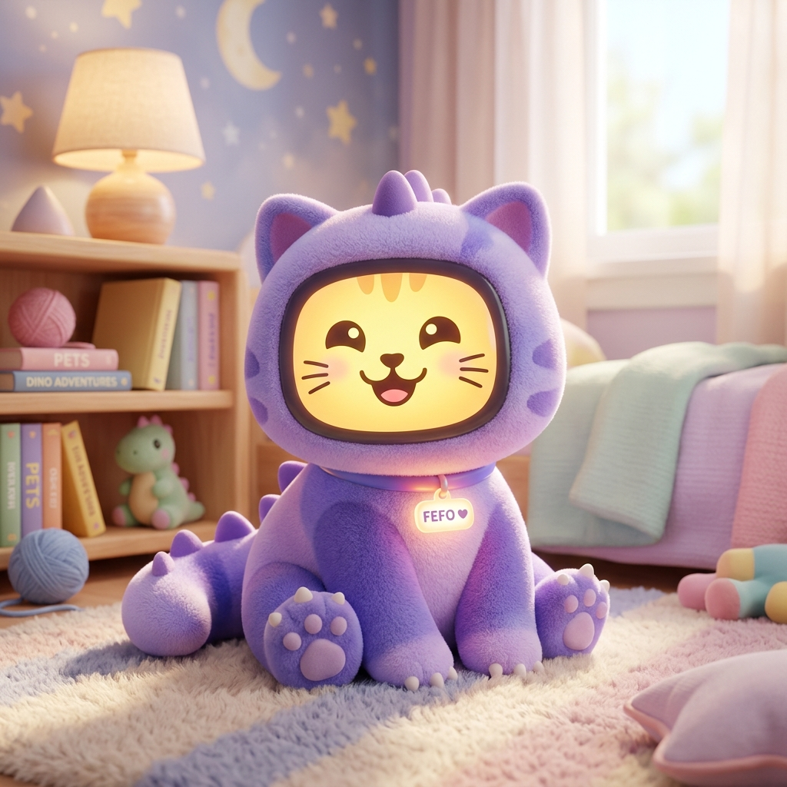
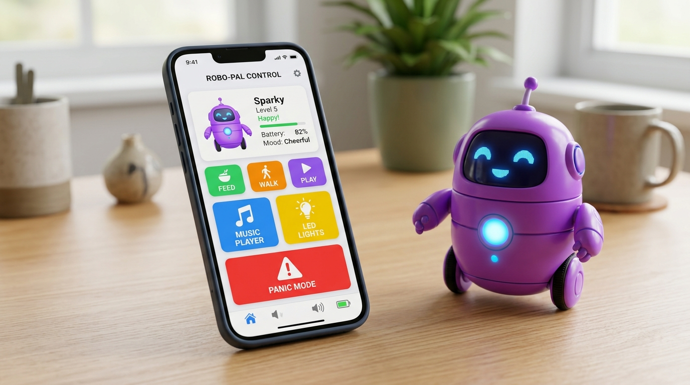

Assista à historinha sobre amizade, observação e inclusão com FEFO e o Sapo, ou exporte em arquivo de vídeo HD (.webm) para compartilhar!
Um amiguinho eletrônico carismático com inteligência emocional, cromoterapia LED, histórias e sensoriamento de ruído que conecta crianças autistas, educadores e famílias.

O aumento de diagnósticos evidencia a necessidade urgente de ferramentas assistivas humanas que apoiem a inclusão sem sobrecarregar educadores e famílias.
Muitas passam despercebidas em sala de aula, sem o apoio sensorial e educacional necessário para se expressarem.
Pais se sentem sozinhos diante dos desafios diários de inclusão, aprendizagem e regulação emocional.
Sem recursos assistivos específicos, o desafio da inclusão recai sobre profissionais frequentemente exaustos.
Poucas tecnologias são projetadas sob medida para as reais necessidades sensoriais e afetivas da criança no TEA.
O FEFO une três dimensões essenciais para transformar o aprendizado em acolhimento e bem-estar.
Estimula atenção, linguagem e cognição. Oferece atividades visuais e de rotina alinhadas à BNCC, auxiliando o professor no aprendizado com sentido e afeto.
Aprender brincando com músicas infantis originais, contos, brincadeiras e cards interativos. Cada interação vira uma descoberta cheia de alegria.
Acolhe e acalma. Com luzes de cromoterapia, vibrações confortadoras e sensor automático de ruído para prevenção e controle de crises sensoriais.
Clique nos botões para simular o comportamento da tela, luzes e estados do FEFO em tempo real.
Um ecossistema completo de apoio emocional, atividades pedagógicas e materiais complementares.
O FEFO monitora o barulho do ambiente com sensor acústico. Em caso de ruído excessivo, entra em modo terapêutico acalmando a criança com sons suaves e luzes confortantes.
Músicas originais, sons da natureza e temas instrumentais selecionados para manter o foco e acalmar durante a rotina escolar.
Pequenos contos gravados com voz infantil carismática que ensinam sobre emoções, empatia, respeito e valores de convivência.
Áudio-aulas interativas sobre saúde e hábitos que incentivam a autonomia da criança nos cuidados de higiene pessoal.
Efeitos de cromoterapia com 15 LEDs NeoPixel coloridos e intensidades suaves que reduzem a ansiedade sensorial.
Materiais complementares físicos com cards de apoio para alfabetização, rotina visual, números, cores e estimulação psicomotora.
Desenvolvido com hardware nacional embarcado ESP32 e aplicativo Android nativo em Flutter. O FEFO opera 100% offline no cartão SD, sem depender de internet para funcionar na sala de aula.

Acompanhe o histórico de evolução do hardware, firmware e aplicativo até as futuras etapas de produção.
Validação da placa ESP32 CYD 3,5", display ILI9488, microSD, DAC áudio PCM, motor de vibração e NeoPixels.
Perfil Nordic UART, comandos de voz/volume/luzes, logs em SD, modo pânico e salvamento de configurações em NVS/SD.
Aplicativo Flutter v042, catálogo em JSON (`fefo.json`), player por menus dinâmicos e transferência via Wi-Fi temporário.
Fluxo automático `FEFO_novos_conteudos`, conversão com hashing SHA256, parse de submenus e sincronização com GitHub.
Assinatura digital de firmware, fabricação da estrutura emborrachada, maleta sensorial e programa de pilotos em escolas públicas.
Por trás do FEFO existe uma equipe apaixonada que une inteligência pedagógica e engenharia de sistemas.
Mestre em Gestão Educacional com +10 anos de experiência em sala de aula e APAE. Especialista em Educação Especial e apaixonada por promover a inclusão com afeto.
Especialista em Arquitetura de TI, Jogos, Robótica e IoTs com +15 anos de experiência. Idealizador de soluções tecnológicas focadas no propósito e impacto social.